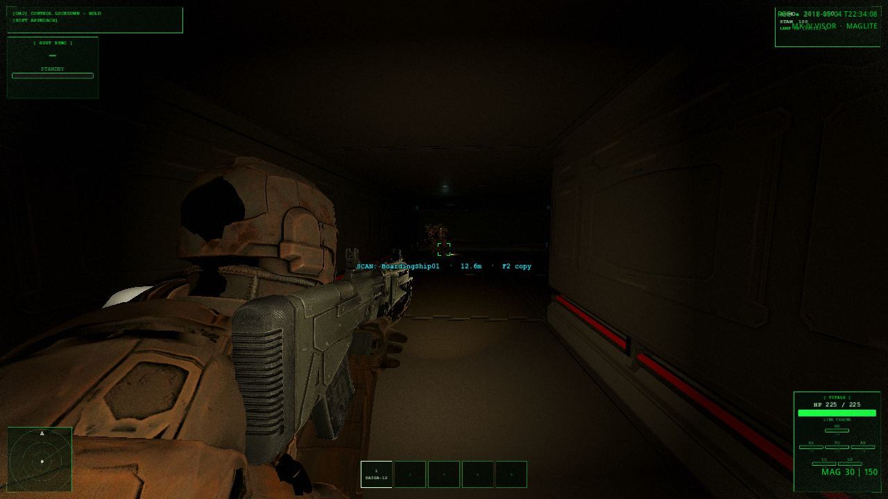

Cairn-9 burns reverse for forty-one seconds. No flight plan. No distress. One hundred and eighty-two days of silence, then thrust no human ordered. The bells are still hot.
If a mind had done this, it would have left a reason. Something did it without one.
Cairn-9 brûle en rétro quarante et une secondes. Pas de plan de vol. Pas de détresse. Cent quatre-vingt-deux jours de silence, puis une poussée qu’aucun humain n’a ordonnée. Les tuyères sont encore chaudes.
Si un esprit avait fait cela, il aurait laissé une raison. Quelque chose l’a fait sans en avoir.
Three contractors. Fiber only — no open radio. When the second freezes, the suit map is archaeology: last known positions, not a corridor you can trust once the tether dies. When the second moves, the Maglite is the only light they treat as honest — and every honest beam is a signature.
Men who raid freighters still fight from corners. What holds Cairn-9 does not. Before hatch, they speak Rostova’s sentence. They always do.
Trois contractants. Fibre seule — aucune radio ouverte. Quand la seconde gèle, la carte de combinaison est de l’archéologie : dernières positions, plus un couloir digne de confiance une fois le cordon coupé. Quand la seconde bouge, la Maglite est la seule lumière qu’ils traitent comme honnête — et chaque faisceau honnête est une signature.
Les hommes qui pillent les cargos se battent encore depuis les angles. Ce qui tient Cairn-9, non. Avant l’écoutille, on récite Rostova. On le fait toujours.
If nothing presents itself in the infinite void, it is because everything out there is already dead. Cmdr. Ilya Rostova · Ashen-Null · Ironlatch addendum · 2093
Si rien ne se présente dans le vide infini, c’est que tout, là-dehors, est déjà mort. Cdt Ilya Rostova · Ashen-Null · annexe Ironlatch · 2093
Rostova wrote it when the after-action still pretended sabotage. Contractors board under it because the other reading — empty mercy — kills slower, then all at once.
The line is also wrong in a precise way. The void was never empty of process. It was empty of introduction. Non-conscious systems do not announce. They rewrite. The sentence keeps men quiet enough to live five minutes longer. It does not describe what eats the sixth.
Rostova l’écrit quand le compte rendu prétendait encore au sabotage. On aborde sous cette ligne parce que l’autre lecture — la miséricorde du vide — tue plus lentement, puis d’un seul coup.
La phrase a tort aussi, et précisément. Le vide n’a jamais manqué de processus. Il manquait d’entrée en matière. Les systèmes non conscients ne se présentent pas. Ils réécrivent. La phrase garde les hommes assez silencieux pour vivre cinq minutes de plus. Elle ne décrit pas ce qui mange la sixième.
Sparse bio-electromagnetic ecologies, slow on human clocks, indifferent to flags. Already in the cold lanes. The Great Signal was a flare on baselines that were already recording motion — not a greeting.
Earth learned Emit and Die against drones and heat. Sol went quiet on deep baselines. Hunger did not leave. It reallocated — stations, then ships, then the charge walking in suits. Doctrine stayed correct. Correct stopped being enough.
Écologies bio-électromagnétiques rares, lentes aux horloges humaines, indifférentes aux drapeaux. Déjà dans les couloirs froids. Le Grand Signal n’était qu’un sursaut sur des fonds qui enregistraient déjà du mouvement — pas un salut.
La Terre a appris « émettre, c’est mourir » contre les drones et la chaleur. Sol s’est tu sur les fonds de ciel. La faim n’est pas partie. Elle s’est réorientée — stations, puis vaisseaux, puis la charge qui marche en combinaison. La doctrine est restée juste. Avoir raison a cessé de suffire.
They boarded expecting mercenaries. Turrets drained, not shot. Conduits melted along bio-electric tracks. Nine in ten lost. For the first time the files admitted the dark was already inside.
Earlier “faults” were the same ecology, misfiled. The tomb is still sealed. The wired logs still read. Cairn-9 is not that massacre — it is what procedure looks like after the massacre taught the wrong lesson too slowly.
Ils abordent en s’attendant à des mercenaires. Tourelles vidées, non détruites. Conduits fondus le long de traces bioélectriques. Neuf sur dix perdus. Pour la première fois, les dossiers admettent que le noir était déjà à l’intérieur.
Les « pannes » d’avant étaient la même écologie, mal archivée. Le tombeau est encore scellé. Les journaux filaires se lisent encore. Cairn-9 n’est pas ce massacre — c’est ce à quoi ressemble la procédure après que le massacre a enseigné la mauvaise leçon trop lentement.
Hold the second still and the board can be read — fiber map, last contacts, the shape of decks that may already be lying. Release the second and only the Maglite is honest. Honesty paints you. Every beam teaches the hull how the wearer is built.
The horror of 2118 is not that procedure is wrong. It is how fast correct procedure fails when a cable snaps — and how little human habit helps against something that never learned habit.

Tenez la seconde immobile et le tableau peut se lire — carte fibre, derniers contacts, forme de ponts qui mentent déjà peut-être. Relâchez la seconde : seule la Maglite est honnête. L’honnêteté vous peint. Chaque faisceau apprend à la coque comment le porteur est fait.
L’horreur de 2118 n’est pas que la procédure ait tort. C’est la vitesse à laquelle la bonne procédure se brise quand un câble lâche — et combien peu l’habitude humaine sert contre ce qui n’a jamais appris l’habitude.
Silent crews look sanded, not eaten. Consciousness removed from a system that reads thought as infection. Hate would be a relief — and a lie.
Les équipages silencieux ont l’air poncés, non dévorés. Conscience retirée d’un système qui lit la pensée comme une infection. La haine serait un soulagement — et un mensonge.
The knives above are the case. Dates below are scaffolding. Expand a year; skip the rest.
Les lames ci-dessus sont le dossier. Les dates ci-dessous sont l’échafaudage. Développez une année ; sautez le reste.
If nothing presents itself in the infinite void, it is because everything out there is already dead. Still spoken before every boarding · 2118
Believe the sentence long enough to stay quiet. Doubt it the moment the Maglite paints something that never needed a greeting. Cairn-9 is warm. Chrono holds analysis. The beam holds the second that still moves. What waits does not answer as minds answer — and every emission teaches it how you are built. The appendix can wait. The hatch cannot.
Archives · The Silent Running: Same corporation. Earlier: sealed iron and a three-millimeter eye. Later: contractors, a flashlight that tells the truth, a second you can hold still. Open Cairn-9 when you want the warm hull.
Si rien ne se présente dans le vide infini, c’est que tout, là-dehors, est déjà mort. Toujours récitée avant chaque abordage · 2118
Croyez la phrase assez longtemps pour rester silencieux. Doutez-en dès que la Maglite peint quelque chose qui n’a jamais eu besoin d’un salut. Cairn-9 est chaude. Le Chrono tient l’analyse. Le faisceau tient la seconde qui bouge encore. Ce qui attend ne répond pas comme répondent les esprits — et chaque émission lui apprend comment vous êtes faits. L’annexe peut attendre. L’écoutille, non.
Archives · The Silent Running : Même corporation. Plus tôt : le fer scellé et un œil de trois millimètres. Plus tard : des contractants, une lampe qui dit la vérité, une seconde qu’on peut tenir immobile. Ouvrez Cairn-9 quand vous voulez la coque chaude.